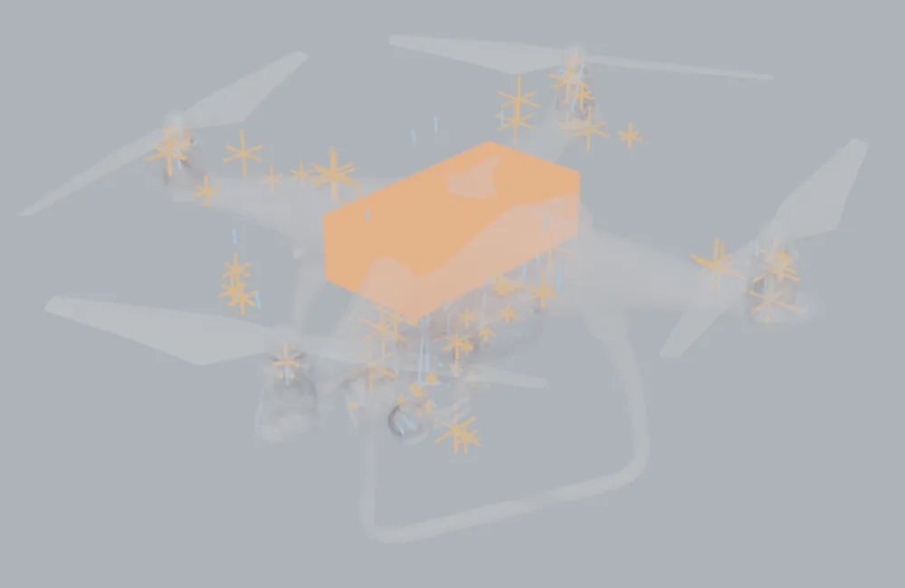

Heat moves between parts in two ways that matter here: through a contact, where two parts touch (a motor bolted to an arm), and across a gap by radiation, where they only look at each other (an engine and the bonnet above it). irsim's solver needs to know both, and a downloaded model says neither. The Connections section finds them for you to review.
Find#
Open Connections and click Find connections. The three settings above the button are usually right as they are:
- Touching within: surfaces closer than this count as touching.
0means 0.2 % of the model's size, at least half a millimetre. Downloaded parts are placed by eye, so a motor sitting "on" an arm is often a fraction of a millimetre off it, or into it. - Facing within: parts that look straight at each other across less than this count as facing.
0means 10 % of the model's size. - Samples per part: more is slower and more exact. The default, 3000, measures a contact to a few per cent.
On the Phantom 4, with a battery added inside it (step 7), the search takes about 10 seconds over 2.5 million faces. It finds 103 contacts and 87 facing pairs.

Tick the eye button beside Find connections to see them in the viewport, as in the picture: each contact is a small orange cross where the two parts touch, and each facing pair is a blue line across the gap. The connection selected in the list is drawn white, with lines to the middle of its two parts, so you can see which two they are.
Review#
Everything the finder proposes starts as found (a question mark in the list). For each one:
- Select selects its two parts in the viewport.
- Confirm keeps it. Reject rules it out: it is not exported, and a new search will not propose it again.
- For a contact, choose the Joint: how the two parts are held together. The joints come from the project's measured table (
configs/thermal/joints.yaml); a new bolted steel joint conducts about twelve times better than the dry default, and the box shows what that means over this contact's area in W/K. - The Area can be typed over if you know better.
- Confirm all found accepts everything you have not reviewed.
Connect selected adds a connection the finder missed: select the two parts and click it. A contact added this way is measured if the parts touch; if they do not, type its area.
Running Find connections again after you edit the model updates what it found, but never changes your decisions: a confirmed connection stays confirmed with the joint you chose, and a rejected one stays out.
What it is, and what it is not#
A contact's area is measured by scattering points over each part and counting the ones that lie against the other part, straight across and roughly parallel. A facing pair's area is the part of one surface whose outward direction reaches the other part first. That tells you which parts exchange heat by radiation; how much is a view factor, which the physics project will compute itself (roadmap row TC.9). In the same way, irsim does not use any of these connections yet: the asset format that will carry them is roadmap row AI.11. Until then they are saved in the .blend and exported beside the model (step 9).